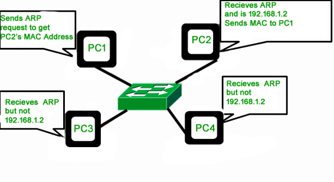
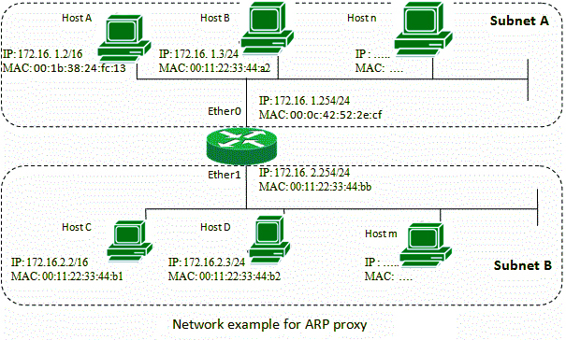
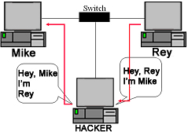

Prerequisite IP Addressing, Introduction of MAC Addresses, Basics of Address Resolution Protocol (ARP)
In this article, we will discuss about whole ARP-family, which are ARP, RARP, InARP, Proxy ARP and Gratuitous ARP. Let’s try to understand each one by one.
1. Address Resolution Protocol (ARP) –
Address Resolution Protocol is a communication protocol used for discovering physical address associated with given network address. Typically, ARP is a network layer to data link layer mapping process, which is used to discover MAC address for given Internet Protocol Address.
In order to send the data to destination, having IP address is necessary but not sufficient; we also need the physical address of the destination machine. ARP is used to get the physical address (MAC address) of destination machine.
Before sending the IP packet, the MAC address of destination must be known. If not so, then sender broadcasts the ARP-discovery packet requesting the MAC address of intended destination. Since ARP-discovery is broadcast, every host inside that network will get this message but the packet will be discarded by everyone except that intended receiver host whose IP is associated. Now, this receiver will send a unicast packet with its MAC address (ARP-reply) to the sender of ARP-discovery packet. After the original sender receives the ARP-reply, it updates ARP-cache and start sending unicast message to the destination.
Example – GATE CS 2005, Question 24 (ARP Based).
2. Reverse Address Resolution Protocol (RARP) –
Reverse ARP is a networking protocol used by a client machine in a local area network to request its Internet Protocol address (IPv4) from the gateway-router’s ARP table. The network administrator creates a table in gateway-router, which is used to map the MAC address to corresponding IP address.
When a new machine is setup or any machine which don’t have memory to store IP address, needs an IP address for its own use. So the machine sends a RARP broadcast packet which contains its own MAC address in both sender and receiver hardware address field.

A special host configured inside the local area network, called as RARP-server is responsible to reply for these kind of broadcast packets. Now the RARP server attempt to find out the entry in IP to MAC address mapping table. If any entry matches in table, RARP server send the response packet to the requesting device along with IP address.
- LAN technologies like Ethernet, Ethernet II, Token Ring and Fiber Distributed Data Interface (FDDI) support the Address Resolution Protocol.
- RARP is not being used in today’s networks. Because we have much great featured protocols like BOOTP (Bootstrap Protocol) and DHCP( Dynamic Host Configuration Protocol).
3. Inverse Address Resolution Protocol (InARP) –
Instead of using Layer-3 address (IP address) to find MAC address, Inverse ARP uses MAC address to find IP address. As the name suggests, InARP is just inverse of ARP. Reverse ARP has been replaced by BOOTP and later DHCP but Inverse ARP is solely used for device configuration. Inverse ARP is enabled by default in ATM(Asynchronous Transfer Mode) networks. InARP is used to find Layer-3 address from Layer-2 address (DLCI in frame relay). Inverse ARP dynamically maps local DLCIs to remote IP addresses when you configure Frame Relay. When using inverse ARP, we know the DLCI of remote router but don’t know its IP address. InARP sends a request to obtain that IP address and map it to the Layer-2 frame-relay DLCI.

4. Proxy ARP –
Proxy ARP was implemented to enable devices which are separated into network segments connected by a router in the same IP network or sub-network to resolve IP address to MAC addresses. When devices are not in same data link layer network but are in the same IP network, they try to transmit data to each other as if they were on the local network. However, the router that separates the devices will not send a broadcast message because routers do not pass hardware-layer broadcasts. Therefore, the addresses cannot be resolved. Proxy ARP is enabled by default so the “proxy router” that resides between the local networks responds with its MAC address as if it were the router to which the broadcast is addressed. When the sending device receives the MAC address of the proxy router, it sends the datagram to the proxy router, which in turns sends the datagram to the designated device.
5. Gratuitous ARP –
Gratuitous Address Resolution Protocol is used in advance network scenarios. It is something performed by computer while booting up. When the computer booted up (Network Interface Card is powered) for the first time, it automatically broadcast its MAC address to the entire network. After Gratuitous ARP MAC address of the computer is known to every switch and allow DHCP servers to know where to send the IP address if requested.
Gratuitous ARP could mean both Gratuitous ARP request and Gratuitous ARP reply, but not needed is all cases. Gratuitous ARP request is a packet where source and destination IP are both set to IP of the machine issuing the packet and the destination MAC is the broadcast address ff:ff:ff:ff:ff:ff ; no reply packet will occur.
Gratuitous ARP is ARP-Reply that was not prompted by an ARP-Request. Gratuitous Address Resolution Protocol is useful to detect IP conflict. Gratuitous ARP is also used to update ARP mapping table and Switch port MAC address table.
What is ARP poisoning (ARP spoofing) –
ARP spoofing is a type of network attack in which the attacker sends the falsified ARP request over the LAN (say to the default gateway), which results connecting attacker’s MAC address to the legitimate server on that victim network. Now, the attacker will start receiving the data which was intended for that IP address. With the help of ARP Poisoning (or ARP Spoofing) attacker is able to intercept data frames, modify traffic or even stop data in-transit.
 ARP poisoning can act as the opening for other major attacks, such as Man in the middle, denial of service, or session hijacking attacks. We will discuss about ARP Spoofing later in depth.
References –
Address Resolution Protocol – Cisco
tools.ietf.org/html/rfc826
tools.ietf.org/html/rfc903
ARP – Wikipedia